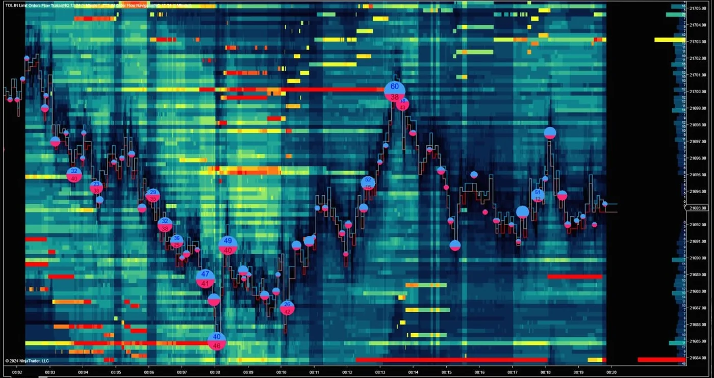
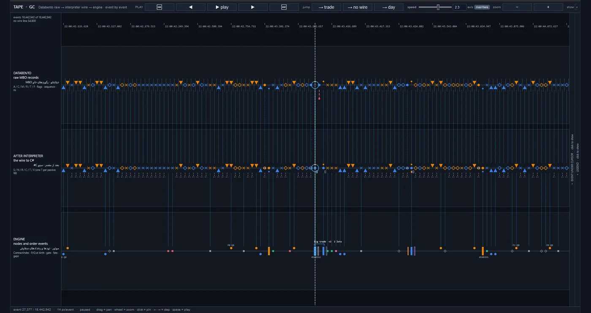
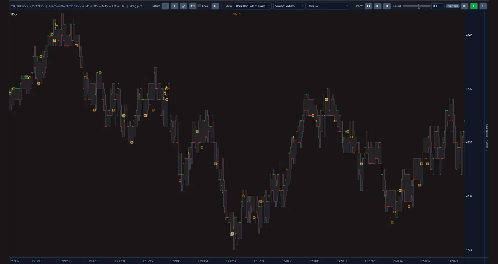

Introduction
Every financial market rests on a silent assumption: whenever someone wants to buy or sell, a counterparty is ready. That counterparty is the market maker: a participant who quotes a price to buy and a price to sell at the same time, buys a little cheaper and sells a little dearer, and earns from repeating that small gap over a great many trades. They do not need to know which way the price will go. Their risk is having traded on the wrong side just before a large move.
We have handed that job to an algorithm that learned it from the market itself.
The CME Market Maker project has gathered several years of the Chicago exchange, one of the world's largest futures markets, at the level of every single order. From that data, with deep learning and statistical analysis, we have arrived at a market-making algorithm that is tested inside a close reconstruction of the exchange itself. The destination is an automated market-making desk that runs capital with this algorithm, not with people's judgement of the moment.
Simulator reports
This project has two full reports from the execution simulator, one per market. Each report shows the algorithm in 25 scenarios at once: five levels of order latency to the exchange, from zero to one millisecond, at five fee levels. You can download both and read and weigh them independently of us.
-
GC Gold futures
- Dec 2019 to Jul 2026test period
- 1,608trading days
- 1,905,921simulated trades in the base scenario
- 25 scenarios5 latency levels × 5 fee levels
One self-contained HTML file, 7.4 MB, Persian and English
-
NQ Nasdaq-100 futures
- May 2017 to Jun 2026test period
- 2,310trading days
- 2,792,780simulated trades in the base scenario
- 25 scenarios5 latency levels × 5 fee levels
One self-contained HTML file, 8.0 MB, Persian and English
These are simulation results on recorded market data (a backtest), not real trading, and no guarantee of the future. Each report shows the loss-making scenarios too.
Inside the platform
These are real screens from the project's tools, not mock-ups. Each view shows the same order-by-order market data from a different angle. Click the image to enlarge it.



The volume of orders waiting at each price and each moment as a heat map, the price path over it, and bubbles marking the trades.
18,442,942 events, steppable one at a time, in three lanes: the raw MBO records, the same records after the interpreter, and the nodes and order events inside the engine.
A one-tick price chart with event markers on each tick. Zooming out climbs from ticks to one minute and up to four hours.
Approach
The algorithm learns from market data and is measured inside a reconstruction of that same market. The work was done in three stages:
-
From raw data to the full picture of the market
The trading screen shows only a summary of the market. We process every message the exchange recorded and rebuild the list of waiting orders for each moment. The result is a picture of how much volume waits at each price and in what order the orders stand in the queue.
-
From the picture of the market to the algorithm
In deep learning the computer learns patterns from real examples instead of following hand-written rules. That way, and backed by statistical analysis, our algorithm has learned in which situations a market maker's trade ends in their favour and in which it ends against them. Its output is three decisions: where to place an order, which trade to avoid, and when to step aside.
-
From the algorithm to tested execution
A right decision must also be executable in the real market. In our simulator the algorithm's orders reach the exchange with a delay, take their turn in the queue and affect the market, just as they would in reality. The yardstick is the net financial result after every cost.
What stands out
-
Knowledge that lives in the system, not in people's heads.
Traditional market making leans on the intuition of skilled traders, and that knowledge is lost when they leave. Our algorithm learned what it knows from the market data itself. That knowledge is recorded, repeatable and can be retrained.
-
Selection, not constant presence in the market.
We measured unselective two-sided quoting at real cost and it lost money, because a market maker who does not select trades mostly when the price is about to move against them. That is exactly where the algorithm's value lies: telling which trade to want and which to step away from.
-
A result that still holds in execution.
Many strategies are profitable on paper and not in practice, because their test assumes an order fills at once at the quoted price. In our simulator an order travels the same path as in the real market, and the simulation's correctness has been checked against an independent reconstruction from the exchange's raw data.
-
Telling a real finding from chance.
Learning models can memorise the past without having learned anything about the future. To avoid that, the algorithm is always measured on periods it did not see in training, turbulent ones included. Each finding is also set beside data deliberately stripped of any meaningful pattern, and if it shows up there too it is discarded.
-
Knowing the infrastructure need before paying for it.
In this field the speed at which an order reaches the exchange and the fee on each trade decide the line between profit and loss, and improving either is expensive. We test the algorithm across a range of those conditions at once. So before any financial commitment it is clear under which conditions the plan is justified.
-
Standard, readable reporting.
The result of each test is presented on one page, with the industry's usual measures and names, in both Persian and English. An investor or their adviser can read and weigh the result independently of us.
The road ahead
-
Done
The data infrastructure, the market reconstruction, the market-making algorithm, the execution simulator and the reporting system are built.
-
Now
Today we are measuring the algorithm in a multi-year test, under varied speed and fee conditions and on more than one market.
-
Next
After that come the connection to live data, deployment close to the exchange, and a trial period with limited capital.
-
Final step
The final step is market making with real capital, as an automated desk.
Technology
The learning models are built in Python and trained on a graphics processor. The market-reconstruction engine and the execution simulator are written in C#, and the raw-data reader in Rust. A change is accepted only after it has been compared with the previous version and has passed the automated tests.